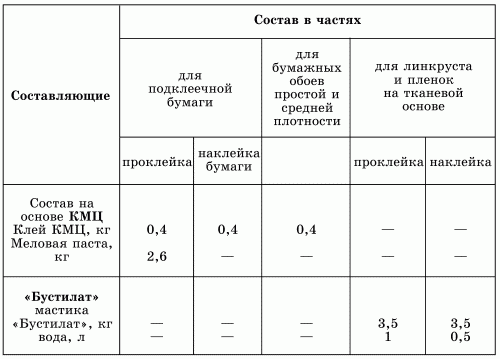

Отделка стен обоями.

Оклеивание стен обоями – самый доступный и популярный вид отделки стен. С помощью отделки обоями можно придать декоративный вид любому помещению, поскольку в настоящее время ассортимент обоев различных рисунков, цветов, фактуры и качества поистине неограничен. Их выбор зависит от того, стены какого помещения предполагается оклеивать обоями.
В соответствии с устойчивостью поверхности обоев к воздействию влаги они бывают следующих видов:
В-0, В-1 – влагостойкие, то есть устойчивые к влажному истиранию без применения моющих средств;
В-2, В-3, В-4 – моющиеся, то есть устойчивые к применению различных моющих средств;
С – невлагостойкие.
По способу изготовления обои делятся на грунтованные и негрунтованные. В первом случае рисунок наносится на предварительно окрашенную (то есть огрунтованную) бумагу, что, конечно же, придает таким обоям большую прочность и декоративность. Грунтованные обои, в свою очередь, делятся на рельефные, имеющие многоцветный или одноцветный фон, рисунок на который нанесен густой краской; тисненые, изготавливаемые с помощью тиснения на плотной бумаге, покрытой специальным составом.
Грунтованные обои хороши еще и тем, что благодаря большой плотности могут скрывать, а местами даже и сглаживать некоторые дефекты стен, например шероховатость поверхности. Кроме того, грунтованные обои очень декоративны и потому способны украсить интерьер любого помещения.
Если к тому же грунтованные обои покрыты специальным верхним слоем, который закрепляет краску, то их практическая ценность еще более высока. Такие обои хорошо переносят влагу, поэтому и называются моющимися.
После оклеивания стен обоями некоторые из них, например стеклообои и виниловые, можно покрывать различными красящими составами, благодаря чему такие покрытия тоже становятся моющимися.
В зависимости от структуры декоративного покрытия выпускаются обои следующих видов:
А – фоновые;
Б – с печатным рисунком без фона;
Г – с фоном и печатным рисунком;
Д – с печатным полутоновым рисунком без фона;
Е – с фоном и печатным полутоновым рисунком;
Ж – с рельефным фоном;
З – с фоном и рельефным рисунком;
И – фоновые с отделкой под шелк;
К – бесфоновые с печатным рисунком и отделкой под шелк;
М – фоновые, с печатным рисунком рельефа и с отделкой под шелк;
О – металлизированные с фоном и печатным рисунком;
П – велюровые, фоновые и без фона;
Р – фоновые, с печатным рисунком и пленочным покрытием.
В настоящее время российской промышленностью выпускается большое количество влагостойких обоев. Вот только некоторые из них:
1. Пленка ПВХ (поливинилхлоридная). Это самоклеящаяся пленка, имеющая клеевой слой, защищенный подложкой. Пленка окрашена по всей длине, с гладкой либо рифленой поверхностью, иногда с рисунком, иногда без него. Пленка ПВХ обычно применяется для отделки стен ванной, туалета, кухни. Пленку ПВХ на звукопоглощающей основе используют в местах с повышенной акустикой.
2. Повинол – декоративный отделочный материал, состоящий из стеклоткани и хлопчатобумажной тканевой основы с поливинилхлоридным покрытием с лицевой стороны. Применяют повинол для оклеивания стен туалетов, ванных комнат и кухонь.
3. Изоплен – пленочный ПВХ-материал на бумажной основе, предназначенный для отделки стен и перегородок.
Кроме того, существуют и другие виды обоев:
– бумажные;
– виниловые;
– текстил-виниловые (иногда их называют тканевыми);
– стеклообои;
– жидкие обои.
– различные пленочные покрытия (изоплен, линкруст, винистен и др.).
Бумажные обои – самые доступные по цене, но далеко не самые долговечные. Тонкие бумажные обои довольно быстро выходят из строя, в особенности если перед их наклеиванием поверхность стен не была как следует подготовлена. Если стену предварительно не загрунтовать, то работать с обоями будет гораздо труднее – они хуже сцепляются с поверхностью и в дальнейшем коробятся под воздействием высокой температуры и повышенной влажности воздуха. Хуже всего, если обои изменяют первоначальный цвет: например, со временем нежно-розовый рисунок местами приобретает грязновато-желтый оттенок. В подобном случае придется снова заменять старые обои новыми.
Для наклеивания бумажных обоев применяют либо специальный клей «Келид», либо КМЦ. Не рекомендуется пользоваться для этих целей клеем ПВА: в дальнейшем, когда придется наклеивать новые обои, возникнут значительные трудности с удалением старых.
Для оклеивания стен обоями потребуются следующие инструменты:
1. Обойный нож.
2. Маховая кисть.
3. Валик для нанесения клея на стену и на обои.
4. Валик для швов обоев.
5. Пластиковый шпатель для разглаживания обоев.
6. Ножницы.
7. Рулетка.
Все эти инструменты вам понадобятся для всех видов обоев, кроме жидких, о которых будет рассказано отдельно.
Перед наклеиванием обоев следует подготовить поверхность стен. Для этого нужен шпатель, с помощью которого удаляются все неровности со стен. Если раньше на стенах была известковая побелка, ее придется предварительно смочить водой. Не так давно, еще лет 10–15 назад, перед оклеиванием обоями стену не загрунтовывали, а просто оклеивали газетами. Считалось, что газетный слой препятствует проявлению жирных или клеевых пятен на обоях. В настоящее время подобные проблемы устраняются благодаря применению любой из грунтовок, о которых говорилось выше.
Поверхности стен, предназначенных для оклеивания пленками на тканевой основе, следует предварительно загрунтовать растворами мастик «Бустилат-М», «Гумилакс», а безосновные покрытия – мастиками КН-2, КН-3, «Бустилат», «Синтилакс». Разведенные составы нужно хранить в посуде с закрытой крышкой не более 5 дней.
Информацию о том, в каких пропорциях следует разводить клей, можно прочитать в аннотации, которая прилагается к упаковке. Однако общие рекомендации по этому вопросу можно найти в табл. 4.
Таблица 4. Составление клеящих растворов
Несколько слов об использовании клея. Высокопрофессиональные мастера предпочитают использовать для наклеивания бумажных обоев клей «Келид». Этот клей выпускается в различных модификациях, например для виниловых обоев и для стеклообоев. Как и у большинства других высококачественных материалов, его стоимость достаточно высока. До настоящего времени самым популярным и доступным по цене остается клей КМЦ.
Этот клей представляет собой рыхлую массу белого, иногда слегка желтоватого оттенка. Клейстер из клея КМЦ готовится следующим образом: в эмалированной емкости 96 массовых частей воды комнатной температуры смешивают с 4 частями клея, после чего оставляют его на 12 часов для набухания.
Пока клей полностью не растворится, раствор нужно не менее трех раз перемешать. Спустя указанное время приготовленный клейстер нужно обязательно процедить через мелкоячеистое сито.
Срок годности сухого клея КМЦ не ограничен.
Клеи могут быть жидкими, гелеобразными, выпускаться в виде порошков и гранул, прутков и пленок. В жидких клеях клеящее вещество присутствует в виде дисперсии (водного раствора с равномерно распределенными в нем частичками клеящего вещества). Клеящее вещество в сухих порошкообразных клеях, гранулах, прутках и пленках находится в твердом состоянии.
Для того чтобы приготовить клей необходимой вязкости, нужно развести его водой (специальными разбавителями) или органическими растворителями. Разбавители используют для приготовления дисперсий, а растворители – для растворов.
Для увеличения вязкости клея в состав вводят наполнители, причем некоторые из них (древесная мука, отходы мукомольного производства, альгинат натрия, каолин, фосфогипс и гипсовое вяжущее) сами по себе обладают клеящей способностью.
Для стабилизации клеящего состава, связывания вредных выделений, пластификации и некоторых других целей в состав клея вводят различные добавки.
Вязкость клея (а именно в соответствии с ней выбирается способ нанесения) находится в прямой зависимости от массовой доли сухого остатка, которая, в свою очередь, показывает, какое количество клея используется для формирования клеевого шва. Чем выше доля сухого остатка, тем меньше клея придется израсходовать в процессе работы.
Крайне важно, чтобы при выполнении работы вязкость клея не изменялась, поскольку от нее зависит равномерность нанесения состава на оклеиваемую поверхность.
Продолжительность испарения растворителей влияет на длительность открытой выдержки после нанесения клея, а также на изменение вязкости приготовленного клеевого состава в процессе работы.
Во время приготовления водорастворимых клеев следует обращать внимание на то, чтобы при добавлении воды не выпадал осадок.